전산응용기계제도기능사 (2002-10-06 기출문제)
1과목: 기계재료 및 요소
1. 금속 재료의 성질 중 기계적 성질이 아닌 것은?
- 인장강도
- 연신율
- 비중
- 경도
(정답률: 59%)

2. 탄소강에서 헤어 크랙의 발생에 가장 큰 영향을 주는 원소는?
- 산소
- 수소
- 질소
- 탄소
(정답률: 69%)
3. 다음 비철 금속 합금 중 비중이 가장 가벼운 합금은?
- Cu합금
- Ni합금
- Al합금
- Mg합금
(정답률: 59%)
4. 구리가 다른 금속에 비해 우수한 성질이 아닌 것은?
- 전연성이 좋아 가공이 용이하다.
- 전기 및 열의 전도성이 우수하다.
- 화학적 저항력이 커서 부식이 잘되지 않는다.
- 비중이 크므로 경금속에 속하며 금속적 광택을 갖는다.
(정답률: 54%)
5. 키이에 대한 설명 중 틀린 것은?
- 원뿔 키이는 축의 어느 위치에나 설치할 수 있다
- 반달 키이는 테이퍼축에 사용하면 편리하다
- 미끄럼 키이를 핀 키라고도 한다.
- 접선 키이는 중심각 120° 로 2조 설치한다.
(정답률: 43%)
6. 저널(journal)이란?
- 베어링과 접촉하는 축의 부분
- 전동축의 윤활유
- 축의 양끝 부분
- 축과 접촉하는 베어링의 부분
(정답률: 48%)
7. 선반, 밀링 머신의 동력 전달 장치로 사용되는 밸트(belt)로 올바른 것은?
- 평 밸트
- V밸트
- 직물 밸트
- 털 밸트
(정답률: 67%)
8. 하중이 작용하는 방법에 의한 분류가 아닌 것은?
- 압축 하중
- 인장 하중
- 충격 하중
- 전단 하중
(정답률: 51%)
9. 리벳 이음에서 전단이 되는 것이 아닌 것은?
- 리벳의 전단
- 판 끝의 전단
- 판이 인장으로 전단
- 리벳 구멍의 압축
(정답률: 30%)
10. 탄소강에 Ni, Cr, W, Si, Mn등 원소를 합금하면 일반적으로 개선되는 성질이 아닌 것은?
- 기계적 성질
- 내식, 내마멸성
- 결정입자의 성장 증가
- 고온에서 기계적 성질 저하방지
(정답률: 57%)
2과목: 기계가공법 및 안전관리
11. 샤르피 충격 시험에서 해머의 무게가 1000N, 해머의 암(arm) 거리 1m, 시험편 노치의 단면적 10cm3, 초기해머 올려진 각도 90°, 시험편 파괴 후 올라간 각도 30° 일 때 충격 강도 값(J/cm3)은?
- 66.6
- 76.6
- 86.6
- 96.6
(정답률: 32%)
12. 다음 그림의 "A"부 나사와 같이 반시계 방향으로 회전하는 롤러를 고정시킬 나사축을 만들 때 나사의 종류와 목적이 맞는 것은?
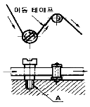
- 오른나사-회전원활
- 오른나사-풀림방지
- 왼나사-회전원활
- 왼나사-풀림방지
(정답률: 46%)
13. 압력용기의 안지름 2,000 ㎜, 수압이 1 N/㎟, 강판의 허용응력 60 N/㎟ 일 때 강판의 두께는 몇 ㎜가 적당한가? (단, 리벳의 이음 효율을 70 %, 부식여유 2㎜를 가산 한다.)
- 24
- 26
- 28
- 30
(정답률: 35%)
14. 재료의 내외부에 열처리 효과의 차이가 생기는 현상을 무엇이라 하는가?
- 질량효과
- 담금질성
- 시효경화
- 열량 효과
(정답률: 41%)
15. 한변의 길이 12 ㎜인 정사각형 단면 봉에 축선 방향으로 144 kgf의 압축하중이 작용할 때 생기는 압축응력값은?(오류 신고가 접수된 문제입니다. 반드시 정답과 해설을 확인하시기 바랍니다.)
- 4.75 kgf/mm2
- 1 kgf/mm2
- 0.75 kgf/mm2
- 12 kgf/mm2
(정답률: 40%)
16. 경도가 높고 내마멸성도 크며 절삭속도가 가장 크며 능률적이나, 잘부서지는 성질이 있어 일반적으로 강철이나 주철을 절삭하는 데에는 사용하지 않고, 비철금속의 정밀절삭에만 쓰이는 절삭공구 재료는?
- 합금공구강
- 스텔라이트
- 세라믹
- 다이아몬드
(정답률: 35%)
17. 센터리스 연삭의 장점이 아닌 것은?
- 대형 중량물의 연삭에 적합하다.
- 연속작업이 가능하므로 대량생산에 적합하다.
- 긴 축재료의 연삭이 가능하다.
- 속이 빈 원통의 외면 연삭에 편리하다.
(정답률: 42%)
18. 접시 머리 나사의 머리부를 묻히게 하기 위하여 원뿔자리를 파는 작업은?
- 카운터 보링
- 카운터 싱킹
- 스폿 페이싱
- 태핑
(정답률: 63%)
19. 바이스의 크기를 표시하는 것은?
- 조오의 폭
- 바이스의 높이
- 공작물이 물릴 수 있는 길이
- 바이스의 전체 중량
(정답률: 33%)
20. 절삭유의 사용 목적이 아닌 것은?
- 바이트 및 공작물의 냉각
- 절삭공구의 수명 연장
- 절삭저항의 증대
- 정밀도의 저하 방지
(정답률: 74%)
21. 리드 스크루의 피치가 4 ㎜인 선반으로 피치 1㎜인 나사를 가공할 때, 가장 적합한 변환 기어의 잇수는?
- 20, 80
- 10, 40
- 25, 80
- 30, 90
(정답률: 36%)
22. 호우닝 머신에서 내면을 가공할 때 호운은 일감에 대하여 어떠한 운동을 하는가?
- 회전운동
- 왕복운동
- 이송운동
- 회전운동과 왕복운동
(정답률: 55%)
23. 플레이너에서 공작물이 고정되는 부분은?
- 베드
- 테이블
- 바이트
- 크로스 레일
(정답률: 43%)
24. 항해 항공의 보안시설 및 조난구조 때에 사용하는, 해상 또는 상공에서 식별하기 쉬운 KS규격 안전 표시 색채는?
- 주황
- 노랑
- 녹색
- 청색
(정답률: 52%)
25. 밀링작업에서 스핀들의 앞면에 있는 24구멍의 직접 분할판을 사용하여 분할하며, 이때에 웜을 아래로 내려 스핀들의 웜 휠과 물림을 끊는 분할법은?
- 섹터분할법
- 직접분할법
- 차동분할법
- 단식분할법
(정답률: 59%)
3과목: 기계제도
26. 선의 종류는 굵기에 따라 3가지로 구분한다. 이에 속하지 않는 것은?
- 가는선
- 굵은선
- 아주 굵은선
- 해칭선
(정답률: 68%)
27. 모듈 m인 한쌍의 기어가 맞물려 있을 때에 각각의 잇수를 Z1, Z2 라면 두 기어의 중심거리를 구하는 식은?(오류 신고가 접수된 문제입니다. 반드시 정답과 해설을 확인하시기 바랍니다.)
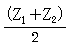
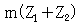
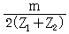
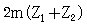
(정답률: 60%)
28. 컴퓨터에서 통신속도의 단위는?
- DIP
- BPS
- BPI
- DPI
(정답률: 51%)
29. 그림과 같은 단면 도시법을 무엇이라고 하는가?
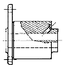
- 전 단면도
- 한쪽 단면도
- 부분 단면도
- 회전 도시 단면도
(정답률: 68%)
30. 그림은 물체를 화살표 방향을 정면도로하여 제3각법에 의하여 정투상도를 그린 것이다. 바르게 그린 것은?
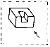
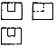
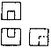
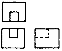
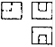
(정답률: 80%)
31. 다음 기호 중 숫자와 병기하여 사용할 수 없는 것은?
- Sø
- SR
- ⊠
- □
(정답률: 84%)
32. 기계재료 표시법 중 중간부분의 기호에서 단조품을 나타내는 기호는?
- F
- C
- B
- G
(정답률: 46%)
33. 다음 끼워맞춤을 표시한 것 중 옳지 못한 것은?
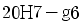
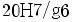
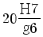
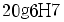
(정답률: 58%)
34. 기준치수가 30, 최대 허용치수가 29.98, 최소 허용치수가 29.95일 때 아래 치수 허용차는 얼마인가?
- +0.03
- +0.⑤
- -0.02
- -0.⑤
(정답률: 55%)
35. 다음 서피스 모델링(surface modeling)의 특징을 설명한 것 중 옳지 않은 것은?
- 복잡한 형상의 표현이 가능하다.
- 단면도를 작성할 수 없다.
- 물리적 성질을 계산하기가 곤란하다.
- NC가공 정보를 얻을 수 있다.
(정답률: 55%)
36. 스퍼 기어의 잇수가 32, 피치원 지름이 96이면 원주 피치는 얼마인가?
- 9.42
- 10.28
- 12.38
- 16.26
(정답률: 44%)
37. 캐시 메모리(cache memory)에 대한 설명으로 맞는 것은?
- 연산장치로서 주로 나눗셈에 이용된다.
- 제어장치로 명령을 해독하는데 주로 사용된다.
- 중앙처리장치와 주기억장치 사이의 속도차이를 극복하기 위해 사용한다.
- 보조 기억장치로서 휴대가 가능하다.
(정답률: 66%)
38. 그림과 같이 두 원에 서로 접하는 직선을 그리려고 한다. 2차원에서 접하는 접선의 갯수는?
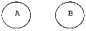
- 무수히 많다.
- 2개
- 3개
- 4개
(정답률: 42%)
39. 다음은 CAD 시스템에서 형상을 구성하는 도면 요소로 틀린 것은?
- 점
- 축
- 원호
- 선
(정답률: 52%)
40. 다음은 나사의 제도법에 대한 설명이다. 틀린 것은?
- 암나사의 골을 표시하는 선은 굵은 실선으로 그린다.
- 수나사의 바깥지름은 굵은 실선으로 그린다.
- 암나사 탭 구멍의 드릴 자리는 120° 의 굵은 실선으로 그린다.
- 완전 나사부와 불완전 나사부의 경계선은 굵은 실선으로 그린다.
(정답률: 50%)
41. CAD 작업에서 제공되는 객체(object)를 정확하게 선정할 수 있도록 하는 방법이 아닌 것은?
- 원이나 원호의 중심
- 직선, 원호, 원의 교차점
- 직선, 원호의 끝점
- 점, 선, 원 등에서 가장 먼 점
(정답률: 66%)
42. CAD시스템에서 위치점을 지정하는 방법으로 바르지 못한 것은?
- 키보드에 의한 좌표값 입력
- 커서(십자선)를 통한 화면상 위치 지정
- 커서를 통한 전체 오브젝트 인식에 의한 위치 지정
- 선(line)상의 등분된 값으로 위치 지정
(정답률: 46%)
43. 다음과 같은 2차원의 동차좌표에서 이동(translation)에 관계되는 것은?
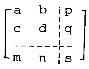
- s
- m, n
- p, q
- a, b, c, d
(정답률: 44%)
44. 평벨트 풀리의 호칭 지름은 어느 것을 말하는가?
- 축 지름
- 피치원 지름
- 바깥지름
- 보스 지름
(정답률: 46%)
45. 키의 호칭방법에 포함되지 않는 것은?
- 종류 및 호칭치수
- 길이
- 인장강도
- 재료
(정답률: 55%)
46. 기하공차의 종류에서 위치 공차에 해당되지 않는 것은?
- 위치도 공차
- 동축도 공차
- 대칭도 공차
- 평면도 공차
(정답률: 58%)
47. 투상 관계를 나타내기 위하여 그림과 같이 원칙적으로 주가되는 그림위에 중심선 등으로 연결하여 그린 투상도는?
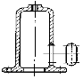
- 보조 투상도
- 국부 투상도
- 부분 투상도
- 회전 투상도
(정답률: 65%)
48. 다음은 센터드릴의 치수를 나타낸 것이다. 치수에서 "2"가 뜻하는 것은?
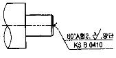
- 센터드릴 구멍이 2개 있다
- 센터드릴 구멍이 양쪽에 있다.
- 센터드릴의 호칭지름이 Ø 2 이다.
- 센터드릴의 형태가 2형이다
(정답률: 39%)
49. 보기의 그림은 어떤 키(key)를 나타낸 것인가?
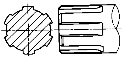
- 묻힘키
- 접선키
- 세레이션
- 스플라인
(정답률: 70%)
50. 베어링 6202의 베어링의 안지름은?
- 5㎜
- 10㎜
- 12㎜
- 15㎜
(정답률: 60%)
51. 보스에서 어느 각도만큼 암이 나와 있는 물체 등을 정투상도에 의하여 나타내면 제도하기가 어렵고 이해하기가 곤란해진다. 이럴 경우, 그 부분을 투상면에 평행한 위치까지 회전시켜 실제 길이가 나타날 수 있도록 그린 투상도는?
- 회전 투상도
- 국부 투상도
- 보조 투상도
- 부분 투상도
(정답률: 66%)
52. 도면이 구비해야 할 기본 요건을 잘못 설명한 것은?
- 대상물의 도형과 함께 필요로 하는 크기, 모양, 자세, 위치의 정보를 포함하여야 한다.
- 애매한 해석이 생기지 않도록 표현상 명확한 뜻을 가져야 한다.
- 무역 및 기술의 국제교류의 입장에서 국제성을 가져야 한다.
- 제품의 부피 및 질량 등의 종합 정보를 항상 포함하여야 한다.
(정답률: 65%)
53. 다음 그림에서 대각선으로 그은 가는 실선이 의미 하는 것은?
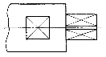
- 열처리 가공 부분
- 평면 자리 부분
- 가공 금지 부분
- 단조 가공 부분
(정답률: 61%)
54. A2규격의 도면을 철하여 사용하려고 한다. 왼쪽의 윤곽선은 용지의 가장자리로부터 얼마를 떨어지게 하여야 하는가?(관련 규정 개정전 문제로 여기서는 기존 정답인 4번을 누르면 정답 처리됩니다. 자세한 내용은 해설을 참고하세요.)
- 10㎜
- 15㎜
- 20㎜
- 25㎜
(정답률: 41%)
55. 용접부의 기호 도시 방법에 대한 설명 중 잘못된 것은?
- 설명선은 기선, 화살표, 꼬리로 구성된다.
- 꼬리는 반드시 그리고 기본기호를 기입한다.
- 화살표는 필요하면 기선의 한 끝에 2개 이상 붙일 수 있다.
- 기선은 보통 수평선으로 하고 기선의 한쪽 끝에는 화살표를 붙인다.
(정답률: 24%)
56. 치수 기입의 원칙에 대한 설명으로 틀린 것은?
- 치수는 되도록 계산할 필요가 없도록 기입한다.
- 치수는 필요에 따라 기준으로 하는 점, 선, 또는 면을 기초로 한다.
- 치수는 되도록 정면도 외에 분산하여 기입하고 중복기입을 피한다.
- 치수는 선에 겹치게 기입해서는 안되나, 부득이한 경우 선을 중단시켜 기입할 수 있다.
(정답률: 63%)
57. M22인 수나사의 표시 중 22는 무엇을 나타내는가?
- 나사부의 길이가 22㎜이다.
- 완전나사부와 불완전나사부를 합한 길이가 22㎜이다.
- 나사의 유효지름이 22㎜이다.
- 나사의 바깥지름이 22㎜이다.
(정답률: 54%)
58. 피치원 지름이 같은 경우 모듈의 값이 커지면 기어의 이크기는 어떻게 되는가?
- 작아진다.
- 커진다.
- 같다
- 관계없다
(정답률: 60%)
59. CAD 시스템의 기본적인 하드웨어 구성이 아닌 것은?
- 입력장치
- 중앙처리장치
- 출력장치
- LAN
(정답률: 75%)
60. 맞출린 기어의 도시법에서 측면도(원형으로 보이는 쪽)의 이끝원은 무슨 선으로 도시하는가?
- 한쪽은 실선 다른 쪽은 파선으로 도시한다.
- 모드 파선으로 도시한다.
- 모두 굵은 실선으로 도시한다.
- 한쪽은 실선 다른 쪽은 가상선으로 도시한다.
(정답률: 63%)